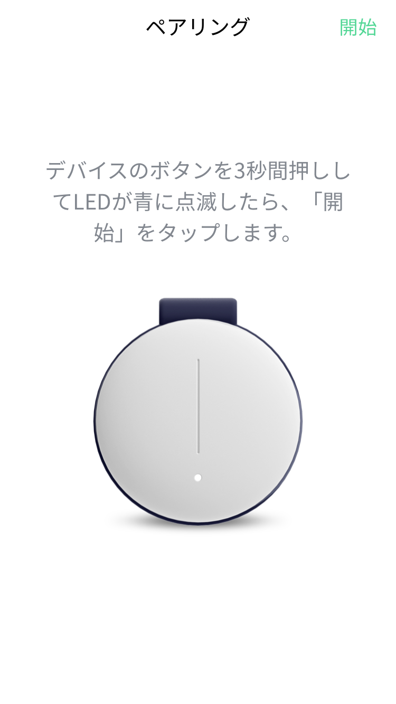

|
ペアリング

- SEEDアプリとSEED機器をBluetoothで接続します。
- SEED機器のボタンを3秒間押すと、青色のLEDが点滅します。
- 青色のLEDが点滅している間、アプリ画面の右上の「開始」ボタンを押します。
- 接続に成功すると、機器のファームウェアバージョンを確認してアップデートします。
- ペアリング過程は、最初の一度だけ進行するとされます。
- 機器のボタンを3秒間押しても、青色のLEDが点滅しない場合
- 機器のボタンを短く押した場合、振動は来ます場合
→ 接続中にエラーが発生した場合、または以前にペアリングがされていることがある場合です。SEED機器のボタンを20秒間押して、青のLEDが点滅することを確認した後に再試行してください。
(※ アプリで「強制ログイン」メッセージが表示されたら、「確認」を選択してください。)
- バッテリーが放電している可能性があります。機器を充電して再試行してください。
- それでも接続できない場合は、カスタマーサービスまでお問い合わせください。
- Androidアプリの場合、ペアリングをため「位置情報へのアクセス」を「許可」が必要です。
→「許可しない」を選択した場合、[設定] → [アプリ] → [SEED] → [權限] → [位置情報]で「許可」してください。
|